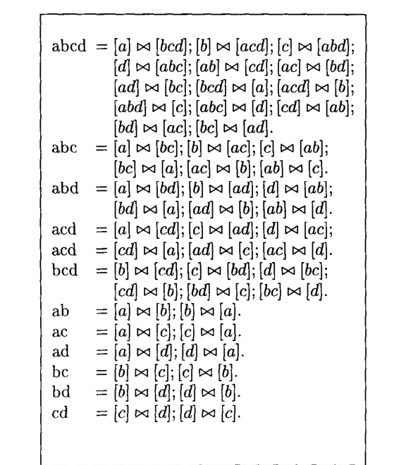
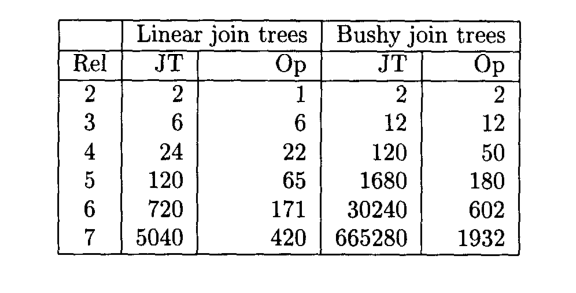
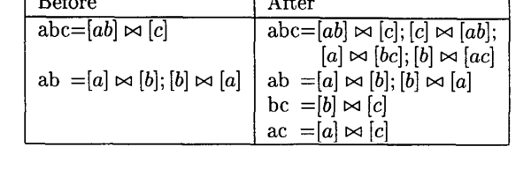
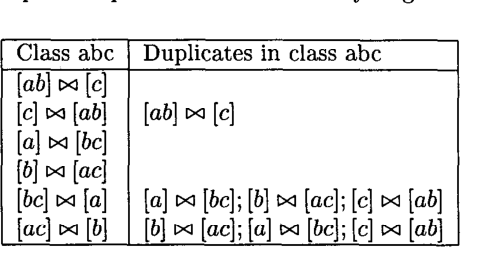
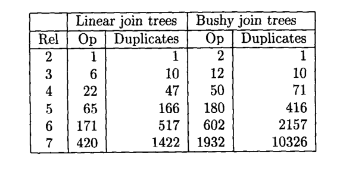
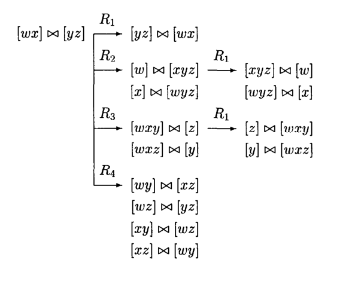
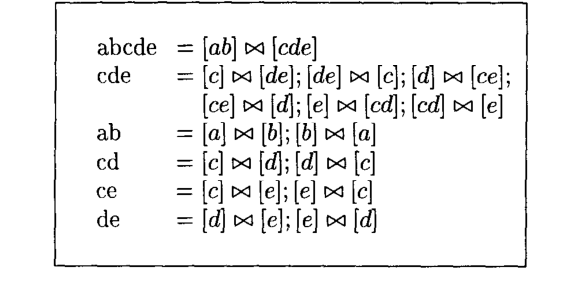
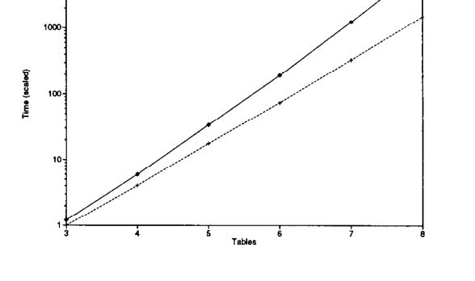
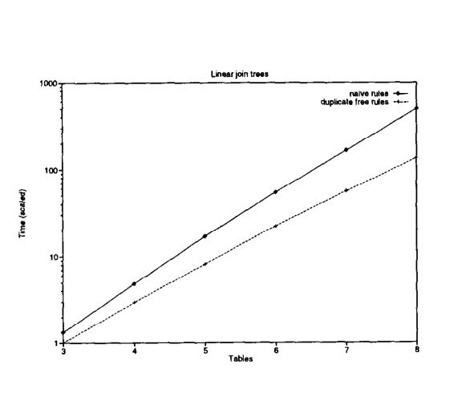

基于变换的 Join 枚举复杂度
Microsoft, One Microsoft Way, Redmond, WA 98052-6399 USA
CWI, P. O. Box 94079, 1090 GB Amsterdam, The Netherlands
摘要
使用 transformation rules 穷尽搜索空间的查询优化器，通常会对每一个 alternative 应用所有可能规则，并在不再产生新信息时停止。McKenna 提出的 memoizing structure 可以提高公共子表达式的复用，从而显著提升搜索效率。不过仍有一个问题没有回答：基于变换的枚举过程本身复杂度是多少？特别是当 relation 数量为 \(n\) 时，它是否能达到 Ono 和 Lohman 给出的 \(O(3^n)\) 下界？
本文考察 transformation-based enumeration 中的 duplicates 问题。一般来说，不同的 transformation rule 序列可能最终推导出同一个元素，优化器必须检测并丢弃这些由多条路径生成的重复元素。我们证明，用于 join 的常规 commutativity / associativity rules 会生成 \(O(4^n)\) 个 duplicate operator。随后，我们在通用 transformation-based framework 内提出一种避免生成 duplicate 的方案，使 join enumeration 达到 \(O(3^n)\) 下界。实验表明，在一个 8-table query 上，避免 duplicate 而不是检测 duplicate，可以让优化时间提升最多约 5 倍。
> 注：这里保留 alternative、transformation rule、duplicate、operator 等关键术语，因为它们在优化器论文中有固定含义。
1 Introduction
Ono 和 Lohman 通过计数 bottom-up dynamic programming 枚举算法必须考虑的 join operator 数量，给出了 join enumeration 复杂度的下界：对于 \(n\) 个 relation，复杂度为 \(O(3^n)\)。这个算法用于 System R 和 Starburst 中，对 join enumeration 很高效，代码也经过了长期测试和调优。
但是，优化器还有一个重要需求：除了 join 之外，还需要重排其他 operator，并根据 cost estimation 在新 alternative 中选择。例如，虽然该算法已经被扩展来处理 aggregates、outerjoins 和 expensive functions，但对于哪些 operator 可以由 enumeration algorithm 处理，并没有精确刻画。也没有一种通用技术可以保证下一次扩展仍然可行。举例来说，为了处理 subqueries，Seshadri 等人提出了一个聪明的迭代过程，其中扩展的 bottom-up enumeration 模块会被调用多次；但这样就被迫超出了 bottom-up enumeration framework。
支持 rule-based, extensible optimizers 的人会说，问题来自缺乏 extensibility，并会指出过去十年发展出的许多研究原型。但普遍看法是，extensible optimizers 的代价是效率。
那么，transformation-based enumeration 能否和 bottom-up enumeration 一样高效？这个问题在实践中很重要，因为 Tandem 和 Microsoft 等公司正在为新的 DBMS 版本采用 transformation-based optimization engine。目标是在通过 transformation rules 生成 alternative 的同时，对它们做 cost-based selection，并且不在 join reordering 上付出性能代价。
本文证明，在 transformation-based system 中，join enumeration 可以达到 Ono 和 Lohman 给出的下界。这个结果依赖两个关键组件：Volcano 中提出的 memoizing structure，以及一种避免生成 duplicate expression 的新技术。
Duplicates 是 transformation-based enumeration 中的主要问题。为了生成完整空间，通用算法通常会持续应用所有可能的 transformation rules，直到不再产生新元素。为了理解这个问题，可以把 search space 看成一张图：每个 solution 是一个 node，transformation rules 在 node 之间提供 edge。这样，生成 duplicate 的数量取决于空间中的 node 数 \(n\)，以及每个 node 的 neighbor 数 \(b_i\)。naive 地应用规则直到没有新元素时，会生成 \(\sum_i b_i\) 个 alternative。为简单起见，假设每个 alternative 的 neighbor 数相同，即 \(b=b_1=b_2=\cdots=b_n\)，则会生成 \(b\cdot n\) 个 alternative。由于空间中只有 \(n\) 个 node，duplicate 数量为 \(n(b-1)\)。也就是说，随着 \(b\) 增大，生成的 tree 中只有 \(1/b\) 是新的，大部分都是 duplicate。
术语说明
“rule-based optimizer literature” 中的一些术语常被宽泛地用于不同特性的系统。本文区分 bottom-up join enumeration 和 transformation-based enumeration。后者指：从一个 initial algebraic expression 出发，应用一组 transformation rules，生成所有可达的 alternative，再用 estimated cost 选择其中一个。
本文组织如下。第 2 节描述 Volcano 的 MEMO structure，并分析它的复杂度。第 3 节识别并量化 duplicates 问题。第 4 节说明如何在不生成 duplicate 的情况下枚举 join orders。第 5 节通过实验展示避免 duplicate 带来的性能提升。第 6 节给出结论。
2 Memoizing
一个空间的 transformation-based enumeration 过程如下：维护一个 visited plans 集合，该集合一开始只包含一个 input expression。对 visited plans 应用所有 transformation rules；如果结果是新的，就加入集合。当无法再生成新 plan 时，这组 transformation 的完整 search space 就探索完毕。对于 join reordering，常用来生成 bushy space 的 transformations 是：
Rule set RS-B0:
Right Associativity:
(A ⋈ B) ⋈ C => A ⋈ (B ⋈ C)
Left Associativity:
A ⋈ (B ⋈ C) => (A ⋈ B) ⋈ C
Commutativity:
A ⋈ B => B ⋈ A这个集合是冗余的，因为删除 Right Associativity 或 Left Associativity 后仍能生成同样的空间。本文使用最小集合 RS-B1，其中只包含 Left Associativity 和 Commutativity。对于 left linear trees，基于 Swami 和 Gupta 的最小规则集为：
Rule set RS-L1:
Swap:
(A ⋈ B) ⋈ C => (A ⋈ C) ⋈ B
Bottom Commutativity:
B1 ⋈ B2 => B2 ⋈ B1
其中 B1、B2 是 base table。由于生成的 alternative 之间可能有大量 common subexpression，Volcano 引入了一种节省内存的搜索空间表示方式，灵感来自 memoizing。
2.1 Volcano 中的 MEMO-structure
MEMO structure 通过最大化 common sub-tree 的共享，来最小化内存需求。它的核心思想是：只使用共享副本，避免复制 subtree。MEMO 被组织成一个 equivalence classes 网络。每个 class 包含一组产生相同中间结果的 operator。operator 的输入是 class，可以理解为“该 class 中任意 operator 都可以作为输入”。

Figure 1 展示了一个四表 join query 的 MEMO-structure。为方便起见，class 用它们 join 的 relation 标记。join space 的 memo structure 与 Vance 和 Maier 工作中维护的结构非常接近。MEMO-structure 帮助缓解 alternative join orders 的组合爆炸。对于 \(n\) 个 relation 的完全连接 join query，ordered bushy 和 linear join trees 的数量已知很大；7 个 relation 的完全连接查询已经会产生 5040 个 linear join trees 和 665280 个 bushy join trees。Figure 2 给出了若干查询规模下 join trees 和 operator 数量。

2.2 MEMO-structure 的大小
相对于 feasible evaluation orders 的总数，MEMO-structure 是一种高效的 search space 编码方式。下面两个 theorem 给出 MEMO-structure 为编码所有 bushy 或 left linear join trees 所需的 join operator 数量。这里假设 query graph 是完全连接的。
> 注：原 PDF 文本层中部分上标和乘号存在 OCR 误读；这里按论文公式语义写成标准形式。
Ono 和 Lohman 通过计数其 dynamic programming algorithm 必须考虑的 join operator 数量，为这些 query graph topology 与 join tree shape 的组合确定了下界。本文发现与他们的下界一致。其他由 Ono 和 Lohman 覆盖的情况也与本文结果一致，详见技术报告。
2.3 Exploration process
一个完整的 MEMO-structure 会从 initial expression 开始，通过递归探索 operator tree 的 root 构造出来。探索一个 operator 时，会穷尽应用所有 transformation rules，以生成所有 alternative。一般来说，应用 transformation rule 可能生成一个已经存在于 MEMO-structure 中的 operator。最简单的例子是 commutativity：第二次应用 commutativity 会重新生成原 operator。因此，在把新 operator 插入 MEMO-structure 之前，必须确认它是否已经存在。通常使用 hash table 来加速 duplicate detection。
3 Duplicates
在量化 duplicate generation 的影响之前，先看一个小例子：对 relation \(a,b,c\) 的完全连接查询构造 MEMO-structure。即使在这个很小的例子中，duplicate 的数量也已经相当大。
对于包含 relation \(a,b,c\) 的完全连接查询，Figure 3 展示了探索 operator \([ab]\bowtie[c]\) 前后的 MEMO-structure。在 “before” MEMO-structure 中，children class \(ab\) 和 \(c\) 已完全探索。对 operator \([ab]\bowtie[c]\) 应用 RS-B1 规则会生成新的 operator。

Commutativity 会从 \([ab]\bowtie[c]\) 生成 \([c]\bowtie[ab]\)，并加入 class \(abc\)。Associativity 不能直接匹配，因为左 child 是一个 class，而规则需要一个 tree。为了解决这个问题，需要从左 class \(ab\) 中抽取 partial tree。
抽取 \([a]\bowtie[b]\) 时，得到 tree \((([a]\bowtie[b])\bowtie[c])\)。此时 associativity 可以应用，生成 \([a]\bowtie([b]\bowtie[c])\)，并把它加入 class \(abc\)。其中 subexpression \([b]\bowtie[c]\) 会启动一个新 class \(bc\)。抽取 \([b]\bowtie[a]\) 时，会类似生成 \([b]\bowtie([a]\bowtie[c])\)，并启动 class \(ac\)。

如上例所示，直接应用 transformation rules 会生成已经存在于 MEMO-structure 中的 operator，也就是 duplicate。Duplicate generation 会显著影响 join enumeration 的效率。因为每生成一个 operator，MEMO-structure 都要被搜索，以判断它是否已经存在。搜索成本和生成 duplicate 本身的时间都会成为 search cost 的一部分。
3.1 Bushy join trees
下面的 theorem 说明，在完全连接 query graph 上，探索 bushy join trees 的 search space 时会生成多少 duplicate。这里假设使用最小的单向 join associativity 与 commutativity rule set，即 RS-B1。
Proof：在包含 \(k\) 个 relation 的 class 中，考虑 operator \([L]\bowtie[R]\)，其中 \([L]\) 包含 \(\ell\) 个 relation，\([R]\) 包含 \(k-\ell\) 个 relation。对该 operator 应用 commutativity 和 associativity 会生成若干 alternative。将 class 中所有 operator 的生成数求和，并减去该 class 中唯一 operator 的数量以及 initial operator，可得 duplicate 数量 \(3^k-3\cdot2^k+4\)。
Proof：大小为 \(k\) 的 class 有 \(C_n^k\) 个。把 Lemma 1 中每个 class 的 duplicate 数量对所有 \(k\) 求和，可得 \(\sum_k C_n^k(3^k-3\cdot2^k+4)\)，化简得到 \(4^n-3^{n+1}+2^{n+2}-n-2\)。
3.2 Linear join trees
下面的 lemma 和 theorem 说明，在为所有 left linear join trees 生成 MEMO-structure 时，会生成多少 duplicate join operator。
Proof：在包含 \(k\) 个 relation 的 class 中，考虑 operator \([L]\bowtie[R]\)。因为只考虑 linear join trees，对每个 operator，左侧或右侧至少有一侧是单 relation。若一侧是单 relation，commutativity 和 swap rules 生成的 operator 数可以计数得到。减去 class 中唯一 operator 数以及 initial operator，可得每个 class 的 duplicate 数量 \(k^2-k+1\)。
Figure 5 给出了 MEMO-structure 的大小以及探索过程中生成的 duplicate 数量。对于 bushy trees，第 2 列给出编码所有 bushy trees 所需的 operator 数量，第 3 列给出探索过程中生成的 duplicate 数量。对于 linear trees，第 4、5 列分别给出 MEMO-structure 大小和 duplicate 数量。结果显示，duplicate 数量很快超过唯一 operator 数量。

4 Duplicate-free join order generation
虽然根据 Theorem 1，transformation-based join enumeration 的空间复杂度是 \(O(3^n)\)，但根据 Theorem 3，枚举过程本身会花费 \(O(4^n)\)。本节说明如何避免生成 duplicate，使枚举过程和 Ono 与 Lohman 的下界一样高效。
为了避免 duplicate，需要利用 transformation rules 的行为信息。最简单的例子是 commutativity：如果一个元素是通过应用 commutativity rule 生成的，那么没有必要再对它应用 commutativity，因为结果只会回到原元素。更一般地说，需要记录每个 operator 的 derivation history，或者反过来记录哪些 rules 仍然值得应用。例如，应用 commutativity rule 后，会在新 operator 的 rule set 中关闭 commutativity rule。
> 注：derivation history 可以理解为每个 operator 的“来源标记”，用于避免沿着必然重复的规则路径继续探索。
4.1 完全连接查询的 duplicate-free transformation rules
为了生成完全连接 query graph 的所有 alternative bushy join trees，本文使用以下 transformation rules，即 RS-B2。
R1: Commutativity
x ⋈0 y => y ⋈1 x
对新 operator ⋈1 关闭 R1, R2, R3, R4。
R2: Right associativity
(x ⋈0 y) ⋈1 z => x ⋈2 (y ⋈3 z)
对新 operator ⋈2 关闭 R2, R3, R4。
R3: Left associativity
x ⋈0 (y ⋈1 z) => (x ⋈2 y) ⋈3 z
对新 operator ⋈3 关闭 R2, R3, R4。
R4: Exchange
(w ⋈0 x) ⋈1 (y ⋈2 z) => (w ⋈3 y) ⋈4 (x ⋈5 z)
对新 operator ⋈4 关闭 R1, R2, R3, R4。例如，考虑 relation \(w,x,y,z\) 上的完全连接查询。使用 class 的 initial element \([wx]\bowtie[yz]\)，以及已经完全探索的 class \(wx\) 与 \(yz\)，四条 transformation rules 会生成 Figure 6 中的六组元素。

为每个 operator 维护 derivation history 会增加内存需求。不过，rule 的 applicability 可以用一个 bit 编码。使用四条 transformation rules 时，每个 operator 只需要额外 4 bit 来存储 derivation history。
Proof：如果两个 operator 由同一条 rule 生成，它们不会相同。R1 生成 mirror image；由于左右 operand 不会相同，因此不会生成 duplicate。R2 将 left child 中的唯一 operator 与 initial operator 的 right operand 组合，只生成唯一 operator。R3 类似。R4 组合 left operand 与 right operand 中的唯一 operator，也只生成唯一 operator。不同 rules 生成的集合之间也不会相交，因为 relation sets 是互斥的，无法得到相同的左右划分。
Proof：在引用 \(n\) 个 relation 的 fully explored class 中，join operator 数量为 \(d(n)=2^n-2\)。设 class 的 initial element 是 \([L]\bowtie[R]\)。R2 将 class \([L]\) 中的每个 element 与 \([R]\) 组合；R3 对 \([R]\) 做类似操作；R4 组合 \([L]\) 与 \([R]\) 中的 operator；R1 生成 initial operator 以及 R2、R3 生成 operator 的 mirror images。把所有新生成的 operator 加上 initial operator 后，数量正好等于包含 \(|L|+|R|\) 个 relation 的 fully explored class 中应有的 operator 数。由于 Theorem 5 已证明没有 duplicate，因此必然生成了所有 valid bushy join orders。
4.2 Example
给定完全连接查询 \(\{a,b,c,d,e\}\)，以及 Figure 7 所示的 MEMO-structure，其中 class \(abcde\) 即将被探索。class \(abcde\) 的 initial operator 为 \([ab]\bowtie[cde]\)，其 child classes 已经被完全探索。

探索从对 \([ab]\bowtie[cde]\) 应用 R2、R3 和 R4 开始，然后应用 R1 生成 mirror images。R2 将 left subtree \([ab]\) 的每个 operator 与 right subtree \([cde]\) 组合。R3 将 right subtree \([cde]\) 的每个 operator 与 left subtree \([ab]\) 组合。R4 则组合 left subtree 与 right subtree 的 split。最后，R1 生成原始 join operator 以及 R2、R3 生成 operator 的 mirror images。
探索完成后，class \(abcde\) 包含 30 个 operator。在探索过程中还创建了 20 个新 class，并递归地完全探索它们。
Linear join trees
为了高效生成所有 linear trees，并且不产生 duplicate，本文使用以下两条 transformation rules 和 application schema。完整性和效率证明与 bushy join trees 的情形类似。
Rule R1:
(A ⋈0 B) ⋈1 C => (A ⋈2 C) ⋈3 B
对新 operator ⋈3 关闭 R1。
A、B、C 是引用一个或多个 relation 的 class。
Rule R2:
Table1 ⋈0 Table2 => Table2 ⋈1 Table1
对新 operator ⋈1 关闭 R2。
Table1 和 Table2 是正好引用一个 relation 的 class。5 Experiments
本节通过实验验证 duplicate-free join enumeration 的效率提升。对于 3 到 8 个 relation 的完全连接查询，实验分别使用两组 transformation rules 生成所有 bushy 和 linear join trees：一组是 naive transformation rules，另一组是 duplicate-free rules。
实验在一台 90 MHz Pentium PC 上进行，运行 Windows NT，主存 64MB，足以容纳最大的 MEMO-structure，即 8-relation 查询的所有 bushy trees。实验使用 Cascades optimizer，它是 Volcano optimizer 的后继。除了增加关闭 transformation rules 的能力之外，没有使用 Volcano 中不存在的特性。对每个唯一 logical join operator，实验还生成一个 physical operator，即 Nested Loop，并做简单的 cardinality cost estimation。
Bushy join trees
对于 naive bushy join tree generation，实验使用第 2.3 节中的 commutativity 和 associativity rules。Graefe 和 DeWitt 已经观察到，只对 commutativity rule 应用一次，可以改善 join enumerator 的性能，因为这避免了长度为 2 的 cycle，例如 \((a\bowtie b)\rightarrow(b\bowtie a)\rightarrow(a\bowtie b)\)。不过改善很小；在 8 relation 时，提升不到 2%。

实验表明，duplicate-free join order generation 总是快于生成并丢弃 duplicate。性能提升从 3 relation 时的 1.22 倍增加到 8 relation 时的 5.67 倍。根据 generation algorithms 的复杂度分析，随着 query 规模增大，提升因子会继续增加。
Linear join trees
生成完整 linear join tree 空间的 naive 方法使用 Swami 的 Swap rule，即 \((A\bowtie B)\bowtie C \rightarrow (A\bowtie C)\bowtie B\)，以及 commutativity rule。与 naive bushy generation 一样，commutativity rule 只应用一次，以避免长度为 2 的 cycle。

Figure 9 展示了使用 naive method 和 duplicate-free method 生成所有 linear trees 的实验结果。对于 3 到 8 relation 的查询，避免生成 duplicate 带来了 1.33 到 3.67 倍的性能提升。提升因子同样会随着 relation 数量增加而继续增加。
6 Conclusion
本文说明，只要避免生成 duplicate，transformation-based optimizers 的 join enumeration 过程就可以达到 Ono 和 Lohman 给出的 \(O(3^n)\) 下界。本文证明 duplicate 数量为 \(O(4^n)\)，并且即使在小查询中也会超过新元素数量。
本文的方法是记录仍然可以应用而不会生成 duplicate 的 transformation rules。我们针对 bushy 和 linear join trees 的生成，详细描述了该机制。实验显示，这种方法能显著降低优化时间；对于 8-table joins，提升可达 5 倍。实现该方法相对简单，只需要对 transformation-rule engine 做一个小扩展：允许关闭 transformation rules。当然，大部分工作在于设计合适的 transformation rule set；这是一项非常重要但在 rule-based optimization literature 中较少被强调的任务。
关于 duplicate 以及如何避免 duplicate 的一般问题，仍有大量工作要做。对于任意 transformation rules 集合，可能很难把它转换成高效且避免 duplicate 的集合。不过，我们相信其中存在有用且可处理的规则类别。
Acknowledgements
Bennet Vance 独立地考虑了 duplicate 问题，并提出了 Exchange transformation rule，虽然其使用方式与本文略有不同。作者感谢他带来的有益讨论、分享的结果以及对本文的评论。
References
- [BMG93] J. A. Blakeley, W. J. McKenna, and G. Graefe. Experiences Building the Open OODB Query Optimizer. SIGMOD, 1993.
- [CS96] S. Chaudhuri and K. Shim. Optimizing Queries with Aggregate Views. EDBT, 1996.
- [GD87] G. Graefe and D. J. DeWitt. The EXODUS Optimizer Generator. SIGMOD, 1987.
- [GLPK95] C. A. Galindo-Legaria, A. Pellenkoft, and M. L. Kersten. Uniformly-Distributed Random Generation of Join Orders. ICDT, 1995.
- [GLR96] C. A. Galindo-Legaria and A. Rosenthal. Outerjoin Simplification and Reordering for Query Optimization. To appear in ACM TODS, 1996.
- [GM93] G. Graefe and W. J. McKenna. The Volcano Optimizer Generator: Extensibility and Efficient Search. ICDE, 1993.
- [HN96] J. M. Hellerstein and J. F. Naughton. Query Execution Techniques for Caching Expensive Methods. SIGMOD, 1996.
- [IK91] Y. E. Ioannidis and Y. C. Kang. Left-Deep vs. Bushy Trees: An Analysis of Strategy Spaces and Its Implications for Query Optimization. SIGMOD, 1991.
- [IW87] Y. E. Ioannidis and E. Wong. Query Optimization by Simulated Annealing. SIGMOD, 1987.
- [Kan91] Y. C. Kang. Randomized Algorithms for Query Optimization. PhD thesis, University of Wisconsin-Madison, 1991.
- [LVZ93] R. S. G. Lanzelotte, P. Valduriez, and M. Zait. On the Effectiveness of Optimization Search Strategies for Parallel Execution Spaces. VLDB, 1993.
- [McK93] W. J. McKenna. Efficient Search in Extensible Database Query Optimization: The Volcano Optimizer Generator. PhD thesis, University of Colorado, Boulder, 1993.
- [OL90] K. Ono and G. M. Lohman. Measuring the Complexity of Join Enumeration in Query Optimization. VLDB, 1990.
- [PGLK96] A. Pellenkoft, G. A. Galindo-Legaria, and M. L. Kersten. Complexity of Transformation-Based Optimizers and Duplicate-Free Generation of Alternatives. CWI Technical Report CS-R9639, 1996.
- [SG88] A. N. Swami and A. Gupta. Optimization of Large Join Queries. SIGMOD, 1988.
- [SHP+96] P. Seshadri et al. Cost-Based Optimization for Magic: Algebra and Implementation. SIGMOD, 1996.
- [Van96a] B. Vance. Complexity of Join Enumeration in Starburst. Manuscript, 1996.
- [Van96b] B. Vance. Personal communication, 1996.
- [VM96] B. Vance and D. Maier. Rapid Bushy Join-Order Optimization with Cartesian Products. SIGMOD, 1996.